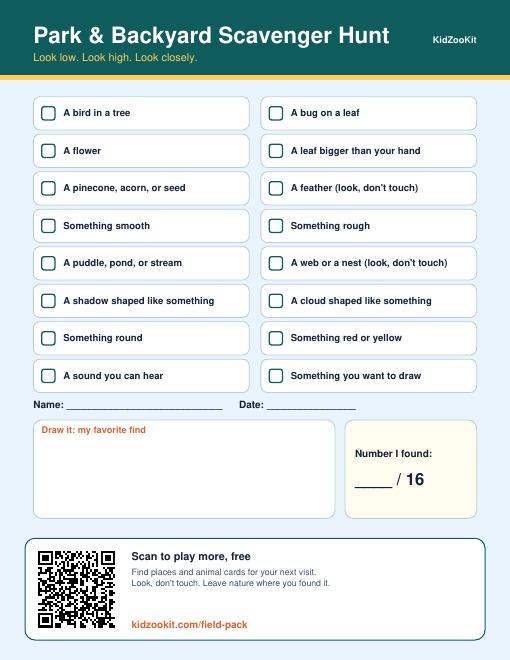
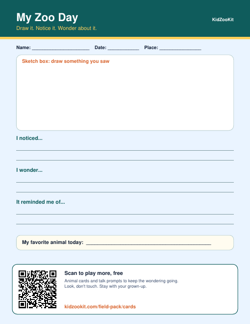
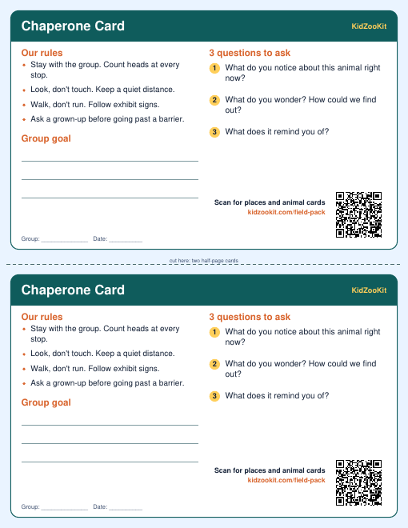

Zoo & Park Scavenger Hunt
Sixteen things to spot, like something with stripes or something with feathers. Tick each one off, then draw your favorite find.
Free for personal and classroom use; please link rather than re-host
Print a page, head to the zoo or park, and turn the visit into an expedition. Free PDFs in US Letter and A4. No signup. Black-and-white printing works fine.
Sixteen things to spot, like something with stripes or something with feathers. Tick each one off, then draw your favorite find.
Free for personal and classroom use; please link rather than re-host

Sixteen finds for a park, trail, or backyard: a leaf, a puddle, a shadow, a sound. Same draw-it box and count line.
Free for personal and classroom use; please link rather than re-host

Six different five-by-five cards with a FREE center, plus a blank grid and a cut-out word bank to make your own. Get five in a row to win.
Free for personal and classroom use; please link rather than re-host

A sketch box, “I noticed”, “I wonder”, “It reminded me of”, and a favorite animal line.
Free for personal and classroom use; please link rather than re-host
Build and print a hunt for the Dallas Zoo (US Letter or A4) on the place page.
Free for personal and classroom use; please link rather than re-host
Open pageBuild and print a hunt for the Georgia Aquarium (US Letter or A4) on the place page.
Free for personal and classroom use; please link rather than re-host
Open pageBuild and print a hunt for the San Diego Zoo (US Letter or A4) on the place page.
Free for personal and classroom use; please link rather than re-host
Open pagePick an animal card, print it, cut it out, and hide it for someone to find. Black and white is fine.
Free for personal and classroom use; please link rather than re-host
Open page
Road spotting, questions for the whole car, and a full A–Z animal alphabet game (with hints for Q and X).
Free for personal and classroom use; please link rather than re-host

Before, during, and after prompts for teachers and chaperones, with space for a group goal.
Free for personal and classroom use; please link rather than re-host

Two half-page cards per sheet: rules, a group goal line, and 3 questions to ask. Cut along the dashed line.
Free for personal and classroom use; please link rather than re-host